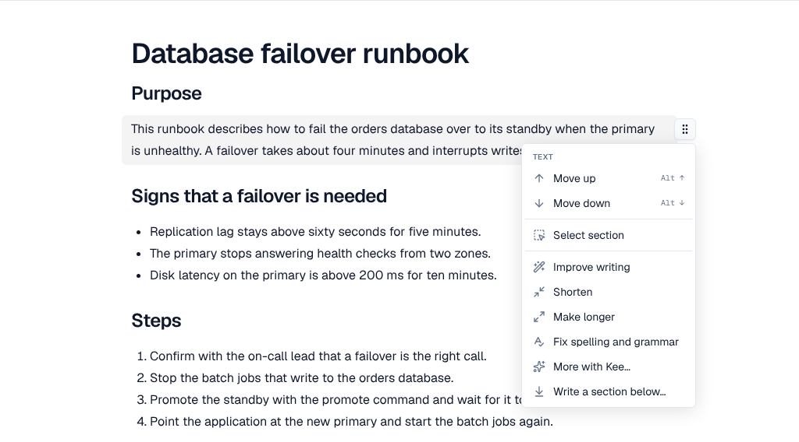
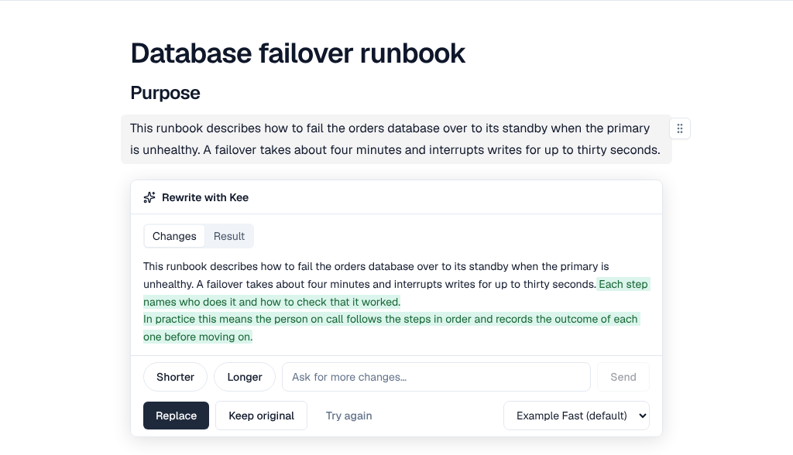
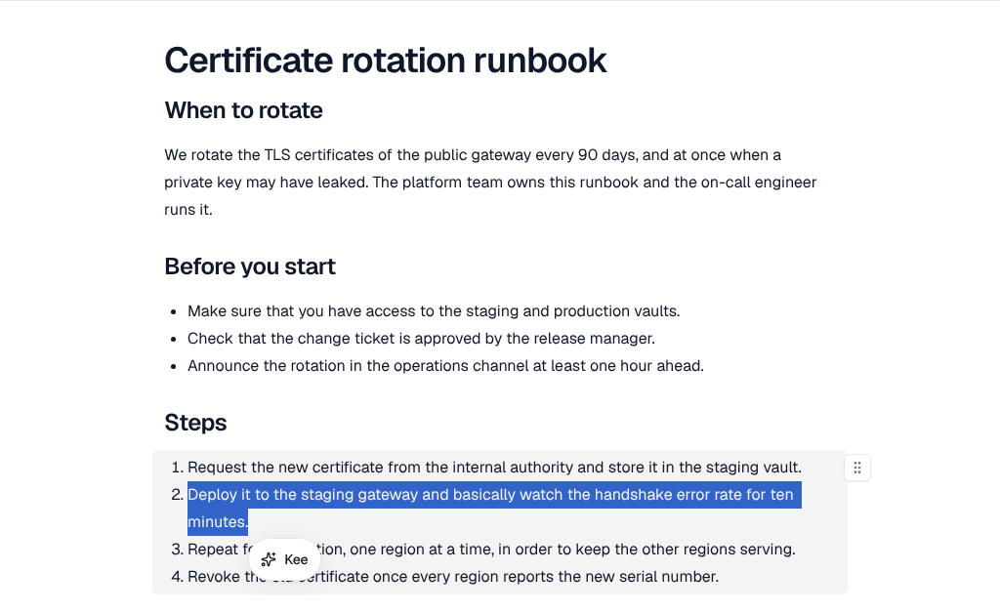
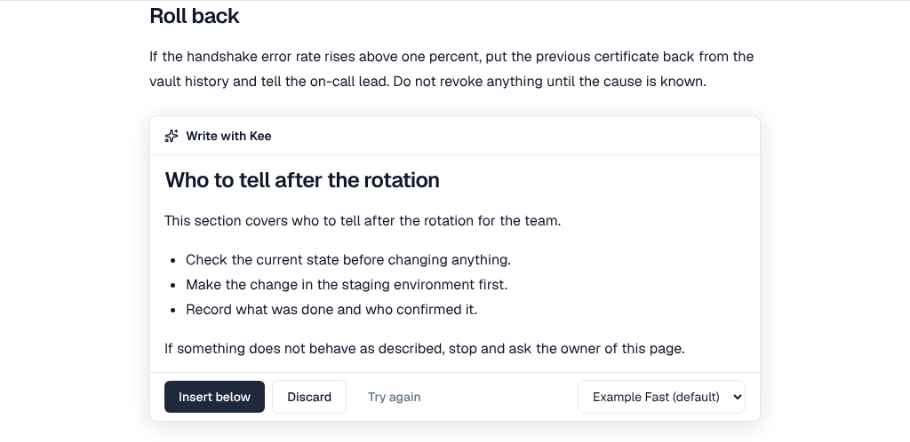
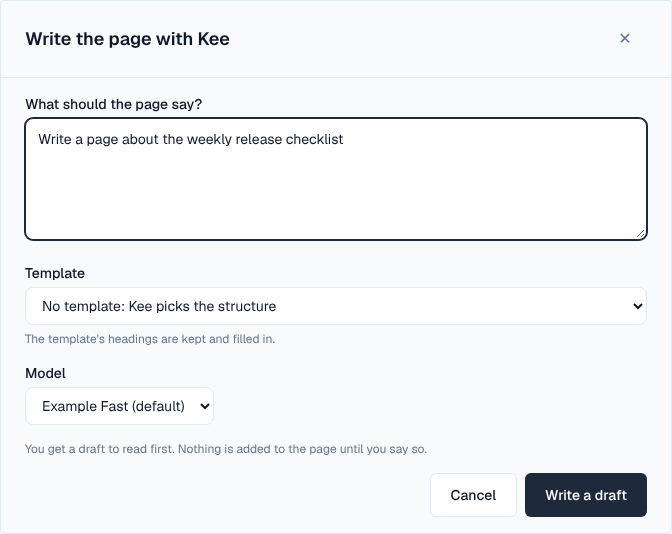
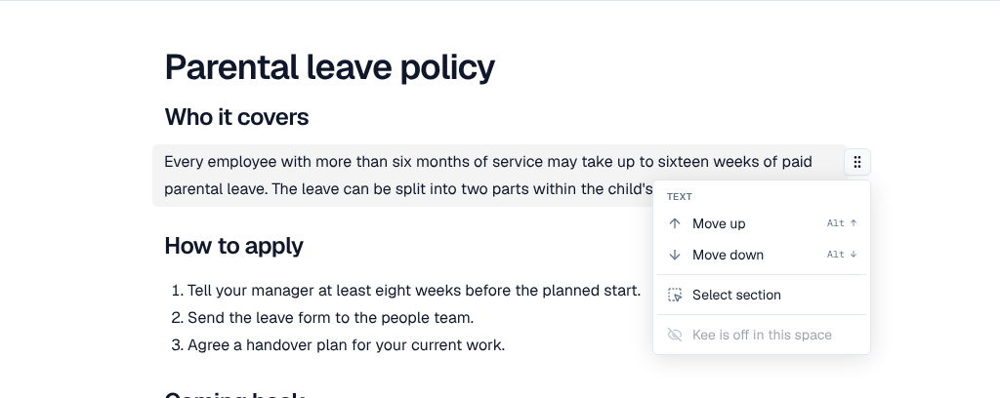

In the editor, Kee works on one piece of the page at a time: a section, a selection, a new section, or the first draft of an empty page. You always see the result before anything changes, and one Undo takes it back off.
You need to be able to edit the page, and Kee must be on for you and in the space. See Who gets Kee.
1. Rewrite a section
Rest the pointer on a section of text or a heading and open its handle at the right (see Sections). Below Move up, Move down and Select section, the menu has Kee's actions:

| Action | Does |
|---|---|
| Improve writing | Clearer, smoother wording with the same meaning |
| Shorten | The same points in fewer words |
| Make longer | More detail and explanation, in the same voice |
| Fix spelling and grammar | Only corrections; the wording stays yours. Always uses the default model |
| More with Kee… | Opens the panel with these actions and more: Change tone (professional, friendly, direct, confident or neutral), Translate (to one of 20 languages), or a request of your own in Or say what should change…, then Rewrite |
| Write a section below… | Writes a new section under this one (see below) |
The actions are offered on text and heading sections. Tables, images, macros and other blocks don't have them.
2. The result
Kee's panel opens under the section and the new text appears as it is written. When it is done:

- Changes shows what was removed and added, word by word. Result shows the new text as it will look on the page. A change of formatting alone (bold, a list) shows only in Result.
- Shorter, Longer and Ask for more changes… refine the result: Kee changes its last answer, not your original. Each round is one request.
- Replace puts the result on the page in place of the section. The editor says Replaced. Undo brings the original back.
- Keep original closes the panel and leaves the page as it was. Esc does the same.
- Try again asks for a new result from the same text.
When the Wiki has more than one model, a model picker sits at the bottom of the panel. The default model is first. Answered by …: the usual model was not available means the administrator's fallback model answered.
3. When the text changes meanwhile
Others may edit the page while Kee works. If the section changed since you asked, the panel says The text changed since you asked: Replace anyway drops the newer edits, Try again starts again from the text as it is now. If someone removed the section, the result can't replace it any more.
4. Rewrite a selection
Select some words inside a paragraph, list item or heading: a small Kee button appears beside the selection. It opens the same panel for just those words, so the rest of the section stays as it is. A selection that runs across several blocks is rewritten like a section.

5. What Kee keeps in place
- Images, mentions, macros and other content Kee can't write stay where they are: Kee rewrites the text around them. If an answer drops or moves one, Kee tries once more, then says This part holds content Kee can't rewrite around. Try a smaller selection.
- Empty lines between blocks are not kept in a rewritten section.
- A long section may be too much to send in one go: This is very long. Rewrite it a part at a time.
6. Write a new section
Write a section below… in a section's menu asks What should the new section say? Kee writes it from your request, the page's title and the text above. When it is done, Insert below adds it under the section (one Undo removes it), Discard closes the panel, and Try again writes it again.

7. Write the page
On an empty page, Write the page with Kee opens a dialog:

- Say what the page should say — For example: a runbook for restoring the database from a backup, for the on-call engineer.
- Pick a template, or none — With a template, its headings are kept and filled in. No template lets Kee choose the structure.
- Write a draft — You read the Draft by Kee first. Nothing is added to the page until you choose Add to the page. Change the request goes back to the dialog.
Kee writes the page from your request and the template only: it doesn't read other pages or files for it.
8. Long answers
If Kee reaches the model's length limit, the panel says Stopped before the end. Continue carries on from where it stopped; the part shown so far is not put on the page until the answer is complete.
9. The mark in the page history
When a result from Kee goes onto a page, the next published version is marked with Kee in the page history, so editors can see which versions hold text written with Kee. The mark doesn't say who used Kee or which words came from it. A space's admins can also show readers a line above such pages; see Page history and versions.
10. When Kee is off in a space
In a space whose admins turned Kee off, the section menu shows Kee is off in this space instead of the actions, and nothing of the space is sent to a model.
